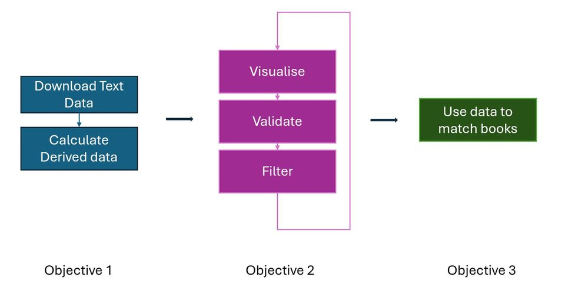
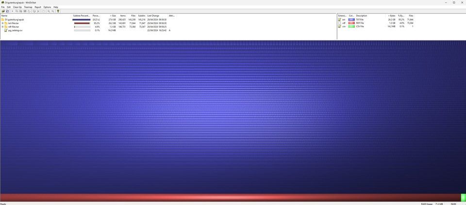
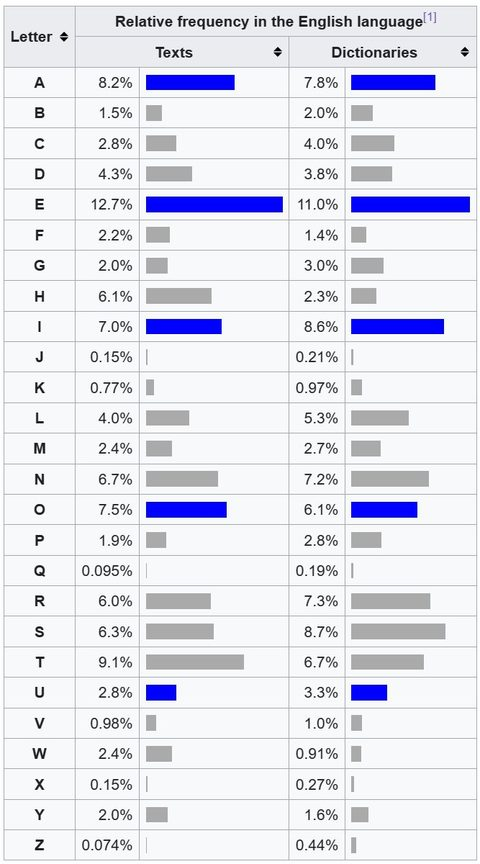

Assessment
Book signatures
I analysed Project Gutenberg texts using metadata, letter counts and word-length features, with the slightly pleasing idea that books have statistical fingerprints.
OCOM5100M / Programming for Data Science
My final assessment built a Python data-analysis pipeline around Project Gutenberg: bulk text ingestion, metadata joins, derived letter and word-length statistics, and visual analysis of a corpus large enough to force practical thinking.
Data work turns into systems work almost immediately: file formats, storage, repeatability and provenance are what decide whether anyone should trust the analysis.

Assessment
I analysed Project Gutenberg texts using metadata, letter counts and word-length features, with the slightly pleasing idea that books have statistical fingerprints.
Tools
The module covered notebooks, pandas, NumPy, plotting, data loading, cleaning and producing reproducible analysis rather than one-off graph magic.
Lesson
The bulk corpus needed careful handling: supported downloads, derived files, joins, storage costs and explicit assumptions about what the metadata did and did not contain.
Carry-forward
This became useful later in robotics and deep learning work, where dataset shape, provenance and derived features mattered as much as the model.

